（八） 二叉树
除了顺序数组与按键查找，有些数据需要表达“谁是谁的孩子”。从父节点与左右孩子的记录开始，再观察不同遍历为什么产生不同访问次序。
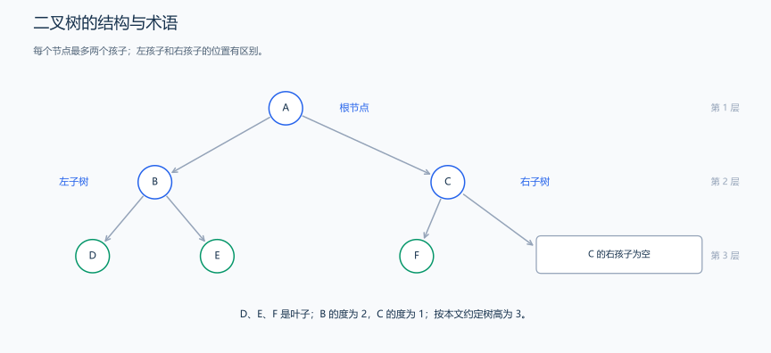
每个节点最多两个孩子，空孩子不计作节点；这里沿用本文根为第 1 层的约定。
1. 二叉树的结构与性质
如上图，每个节点最多有两个有序子节点的树结构称为二叉树。
左边和右边的子节点又被分别被称为：
- 左子节点（left child）
- 右子节点（right child）
严格定义：二叉树 是 n(n≥0)个节点的有限集合，该集合或者为空集（称为空二叉树），或者由一个根节点和两棵互不相交的、分别称为根节点的左子树和右子树的二叉树组成。
1.1 左右子树与五种结构形态
- 每个节点最多有两棵子树（即度不超过 2）
- 左子树和右子树有顺序，不能颠倒
- 即使只有一棵子树，也要区分是左子树还是右子树
二叉树的五种形态：
1.2 节点的度、深度与高度
（1）节点的度
- 节点的度：节点拥有的子树数目
- 在二叉树中，节点的度只能是 0、1 或 2
（2）叶子节点
- 叶子节点：度为 0 的节点（没有子节点的节点）
（3） 节点的层次和深度
- 根节点的层次：第 1 层
- 节点的深度：本文统一按节点所在层数计算，根的深度为 1；若按边数计算根深度为 0，公式应相应调整。
（4）树的高度
- 树的高度：树中节点的最大层次
示例：
对于上述二叉树，根节点有两个子树，五个节点的度数分别为 2，2，0，0，0，其中叶子节点，即度为 0 的节点为 3，4，5
根节点 1 的深度为 1，
子节点 2，3 的深度为 2
子节点 4，5 的深度为 3
树的最大高度为 3
1.3 常见二叉树类型与数量关系
1.3.1 满、完全、搜索与平衡二叉树
满二叉树（本文采用国内教材常见定义，对应 perfect binary tree）：每层都达到最多节点数，高度为 h 时共有 \(2^h-1\) 个节点。
英文 full / proper binary tree 通常只要求每个节点有 0 或 2 个孩子，不要求所有叶子处于同一层。下面五个节点的图符合 full 的英文定义，但不是本文定义的满二叉树。
完全二叉树（Complete Binary Tree）：除最后一层外，其他层节点都满，且最后一层节点从左到右连续排列。
由于是从左到右连续排列，因此下列这种不是完全二叉树：
二叉搜索树（BST, Binary Search Tree）：左子树的所有节点值 < 当前节点值 < 右子树所有节点值。
说明：
- 以节点 8 为根：左子树(3,1,6,4,7)都 <8，右子树(10,14,13)都> 8
- 以节点 3 为根：左子树(1)<3，右子树(6,4,7)> 3
- 以节点 6 为根：左子树(4)<6，右子树(7)> 6
AVL 树：二叉搜索树，并且每个节点的左右子树高度差不超过 1。红黑树使用颜色等约束维持对数级高度，不要求每个节点的左右高度差都不超过 1。
自平衡二叉搜索树通过相应的旋转或调整规则控制树高，保持对数级的查找、插入和删除代价。AVL 与红黑树使用的平衡约束不同。
平衡因子：某节点的左子树高度 - 右子树高度 AVL 平衡条件：所有节点的平衡因子绝对值 ≤ 1 常见自平衡二叉搜索树：AVL 树和红黑树使用不同约束与调整规则。
图中的 AVL 示例保持搜索树的大小关系，并且每个节点的左右子树高度差不超过 1。
1.3.2 节点数、高度与叶子数的关系
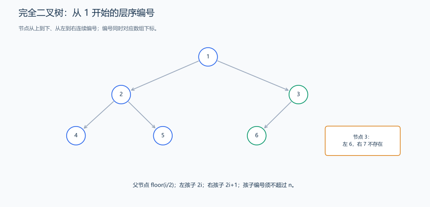
此图采用从 1 开始的层序编号，父节点为 i/2，孩子为 2i、2i+1；编号超出节点数表示孩子不存在。
性质 1：在二叉树的第 i 层上至多有 \(2^{(i-1)}\) 个节点(\(i≥1\))
性质 2：深度为 \(k\) 的二叉树至多有 \(2^k - 1\) 个节点(\(k≥1\))
性质 3：对任何一棵非空二叉树 T，如果其叶子节点数为 \(n_0\)，度为 \(2\) 的节点数为 \(n_2\)，则： \(n_0 = n_2 + 1\)
性质 4：具有 \(n\) 个节点的完全二叉树的深度为 \(\lfloor\log_2 n\rfloor + 1\)（n ≥ 1）
性质 5：
对完全二叉树按层编号，则对任意节点 \(i\) 有：
- 如果 \(i=1\)，则是根节点
- 如果 \(i>1\)，则其父节点编号为 \(⌊i/2⌋\)
- 左孩子编号为 \(2i\)（如果 \(2i≤n\)）
- 右孩子编号为 \(2i+1\)（如果 \(2i+1≤n\) ）
性质 6：对于高度为 \(h\) 的二叉树：
- 最少节点数：\(h\)（每层只有一个节点）
- 最多节点数：\(2^h - 1\)（满二叉树）
性质 7：对于有 n 个节点的完全二叉树：
- 高度：\(\lfloor\log_2 n\rfloor + 1\)（n ≥ 1）
- 叶子节点数：\(⌈\frac{n}{2}⌉\)
- 非叶子节点数：\(⌊\frac{n}{2}⌋\)
1.3.3 用二叉树性质计算节点数与高度
题目：一棵完全二叉树有 1000 个节点，求：
- 树的高度
- 叶子节点数
- 度为 1 的节点数
解答：
高度 = \(⌊log_21000⌋ + 1 = ⌊9.966⌋ + 1 = 9 + 1 = 10\)
叶子节点数 = $ ⌈⌉ = 500$
度为 1 的节点数：
- \(n_0 = 500\)
- \(n = n_0 + n_1 + n_2 = 1000\)
- 又因为 \(n_0 = n_2 + 1\)，所以 \(n_2 = 499\)
- 因此 \(n_1 = 1000 - 500 - 499 = 1\)
1.4 二叉树的遍历
示例二叉树：
1.4.1 层序遍历
访问顺序：按层次从上到下，每层从左到右
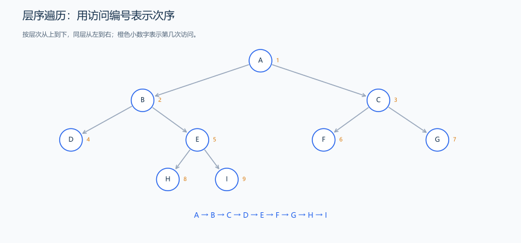
橙色小数字表示访问次序；树边表示父子关系，依次按层读取。
所以层序遍历为：A - B - C - D - E - F - G - H - I
1.4.2 前序遍历
访问顺序：根节点 → 左子树 → 右子树
先根、再左、再右；用编号和下方序列表示访问顺序，树边只表示父子关系。
所以前序遍历为：A - B - D - E - H - I - C - F - G
1.4.3 中序遍历
访问顺序：左子树 → 根节点 → 右子树
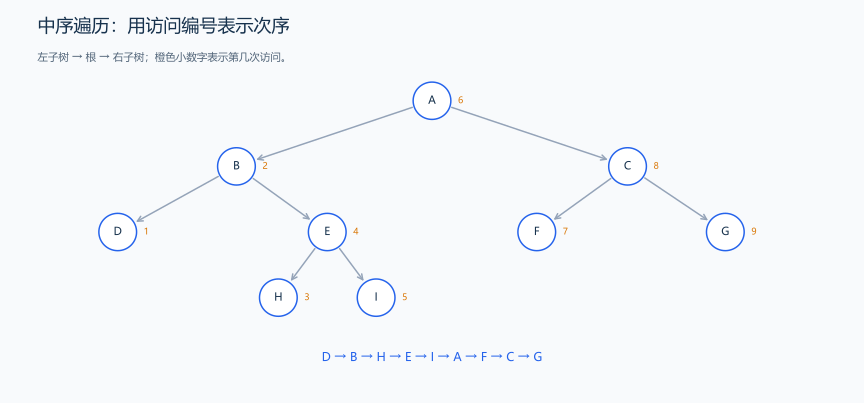
先左、再根、再右；当前节点要等左子树全部访问后才访问。
所以中序遍历：D - B - H - E - I - A - F - C - G
1.4.4 后序遍历
访问顺序：左子树 → 右子树 → 根节点
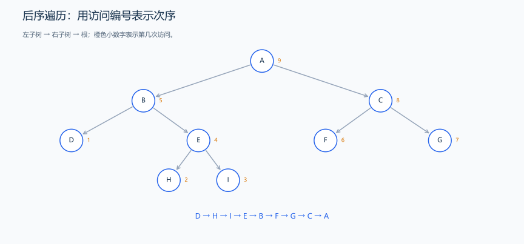
先左、再右、再根；子树处理完成以后才访问其根节点。
所以后序遍历：D - H - I - E - B - F - G - C - A
| 遍历方式 | 应用场景 |
|---|---|
| 前序遍历 | 复制二叉树、前缀表达式 |
| 中序遍历 | 二叉搜索树的有序输出、中缀表达式 |
| 后序遍历 | 释放二叉树内存、后缀表达式、计算目录大小 |
| 层序遍历 | 查找最短路径、按层次处理节点 |
这四张图用于核对同一棵树的完整访问次序。执行时怎样暂停在子调用、返回后何时访问根、队列如何进出，会在后面的二叉树实现中用 5 个节点逐步展开；先理解这些动作，再按相同规则推到这棵 9 节点树。
1.4.5 遍历序列与二叉树的唯一性
- 节点标识互不相同时，前序 + 中序或后序 + 中序可以唯一确定二叉树。
- 一般情况下只有前序 + 后序不能唯一确定；重复值需要额外的节点身份或约束。
2. 按层序插入与删除的二叉树实现
2.1 二叉树节点类
题目原文（自拟示例）： 输入 n 个互不相同的整数，按层序放入普通二叉树，再输入一个待删除值。输出四种遍历结果，并删除目标后输出层序结果；允许空树，找不到目标时树不变。
思路分析： 层序插入寻找第一个空位；删除时把最后一个节点的值复制到目标位置，再摘除最后节点。这个操作维护普通树结构，不维护 BST 的大小关系。
节点类拥有左右子树，二叉树对象拥有根节点；所有节点由 new 创建，不允许共享同一个子节点或拷贝整个所有权结构。
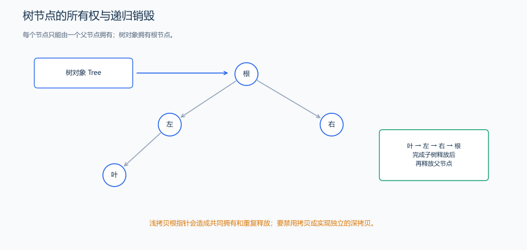
每个孩子只由一个父节点拥有，根由树对象拥有；析构根会递归销毁左右子树，不能把同一节点交给两个父节点。
这里的 TreeNode(const TreeNode&) = delete; 与赋值函数末尾的 = delete 禁止这两种拷贝操作；它们不是释放内存的 delete 表达式。节点拥有左右子树的释放责任，若只复制地址，就可能让两份对象重复释放同一子树。后面的 BinaryTree 也按同样理由禁止直接拷贝。
/*
* 二叉树节点类
*
* 定义了二叉树的基本结构，包含节点值和左右子节点指针
*/
class TreeNode {
public:
int val; // 节点值
TreeNode *left; // 左子节点指针
TreeNode *right; // 右子节点指针
/*
* 默认构造函数
*
* 初始化节点值为0，左右子节点指针为空
*/
TreeNode() : val(0), left(nullptr), right(nullptr) {}
TreeNode(const TreeNode &) = delete;
TreeNode &operator=(const TreeNode &) = delete;
/*
* 带参数的构造函数
*
* 参数 x：用于初始化节点的值
*/
TreeNode(int x) : val(x), left(nullptr), right(nullptr) {}
~TreeNode() {
delete left;
delete right;
}
};2.2 BinaryTree 的接口与成员操作
题目原文（自拟）： 输入 n（1<=n<=10000）和 n 个 int 范围的整数，按输入顺序层序插入一棵普通二叉树；重复值不插入。输出层序、前序、中序、后序遍历。再读一个待删除值，用最深最右叶子的值替换目标节点并移除该叶子，最后输出层序遍历；目标不存在则结构不变。遍历同层或同父节点时先左后右，输出格式见后面样例。
思路分析： 普通二叉树没有搜索树的大小约束。插入依据层序的首个空位，遍历依据访问顺序，删除则根据末尾叶子的替换规则；三个过程分别实现，不能以 BST 删除规则代替。
下面代码与上一段节点类合用，还需要 <iostream>、<queue> 和 using namespace std;。
代码组合方式： 在同一个 .cpp 中依次放置 TreeNode 定义、下面的 BinaryTree 类定义、各成员函数实现和唯一的 main。成员实现不能单独运行；BinaryTree:: 表示它属于这个类。
2.2.1 先确定类的接口与所有权
TreeNode 析构时递归释放孩子，BinaryTree 只需释放根。禁止浅拷贝，避免两个对象重复释放同一棵树。成员声明先列出接口，下面再分开实现。
#include <iostream>
#include <queue>
using namespace std;
// 先放入上一小节的 TreeNode 定义；root 拥有整棵树。
class BinaryTree {
public:
TreeNode *root;
BinaryTree() : root(nullptr) {}
BinaryTree(const BinaryTree &) = delete;
BinaryTree &operator=(const BinaryTree &) = delete;
~BinaryTree() { delete root; }
bool insert(int value);
void levelOrder();
void preOrder(TreeNode *node);
void inOrder(TreeNode *node);
void postOrder(TreeNode *node);
TreeNode *deleteNode(TreeNode *root, int key);
};2.2.2 层序寻找插入位置
队列按层扫描，记下第一个缺孩子的节点。即使已找到空位，也继续扫描全树，检查值是否重复；不存在重复才真正插入。单次插入 O(n)，连续插入 n 个不同值的总量可能为 O(n²)。
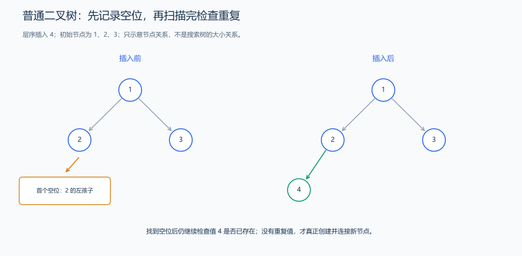
队列按层扫描，记下第一个缺孩子的节点。
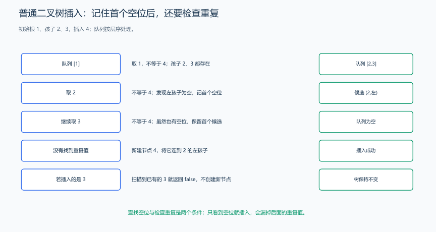
在根 1、孩子 2 和 3 的树中插入 4：队列先处理 1，再处理 2，此时记下 2 的左空位；随后仍处理 3，确认没有值 4，才创建并连接新节点。若插入的是 3，处理到现有节点 3 就返回 false，之前记下的空位不发生写入。记录位置和实际插入是两个时机，不能混在一起。
// 队列按层扫描，记下第一个缺孩子的节点。
bool BinaryTree::insert(int value) {
if (!root) {
root = new TreeNode(value);
return true;
}
queue<TreeNode *> pending;
pending.push(root);
TreeNode *vacancy = nullptr;
bool leftVacancy = false;
while (!pending.empty()) {
TreeNode *node = pending.front();
pending.pop();
if (node->val == value)
return false;
if (node->left)
pending.push(node->left);
else if (!vacancy) {
vacancy = node;
leftVacancy = true;
}
if (node->right)
pending.push(node->right);
else if (!vacancy) {
vacancy = node;
leftVacancy = false;
}
}
TreeNode *added = new TreeNode(value);
if (leftVacancy)
vacancy->left = added;
else
vacancy->right = added;
return true;
}2.2.3 队列驱动层序遍历
取出队头并输出，再把左、右孩子依次入队。队列始终保存尚未访问的节点；每个节点处理一次，时间 O(n)，队列空间 O(w)，w 为最大层宽。
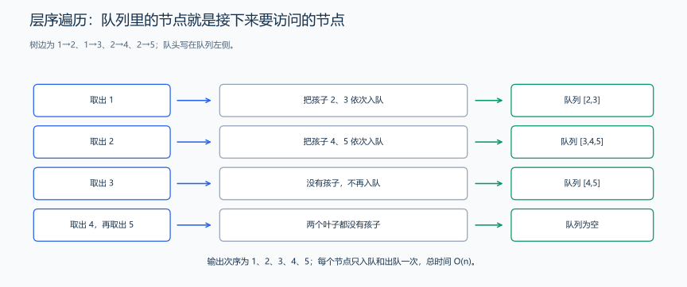
取出队头并输出，再把左、右孩子依次入队。
// 取出队头并输出，再把左、右孩子依次入队。
void BinaryTree::levelOrder() {
// 检查根节点是否为空
if (!root)
return;
queue<TreeNode *> q;
// 将根节点入队
q.push(root);
// 当队列不为空时继续遍历
while (!q.empty()) {
// 取出队首节点并出队
TreeNode *current = q.front();
q.pop();
// 输出当前节点值
cout << current->val << " ";
// 将左右子节点依次入队
if (current->left)
q.push(current->left);
if (current->right)
q.push(current->right);
}
// 遍历完成后换行
cout << endl;
}2.2.4 前序：根、左、右
空指针立即返回。先访问当前根，再递归左子树和右子树；递归深度为树高 h，时间 O(n)，调用栈 O(h)。
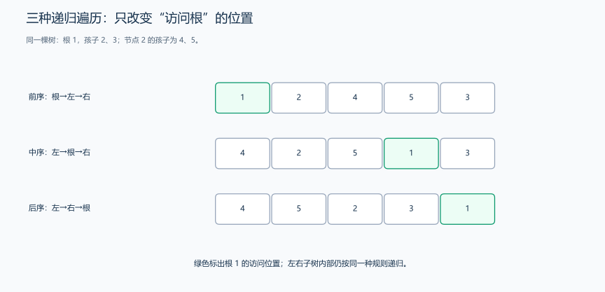
绿色标出根节点的访问位置，子树内部递归采用相同规则。
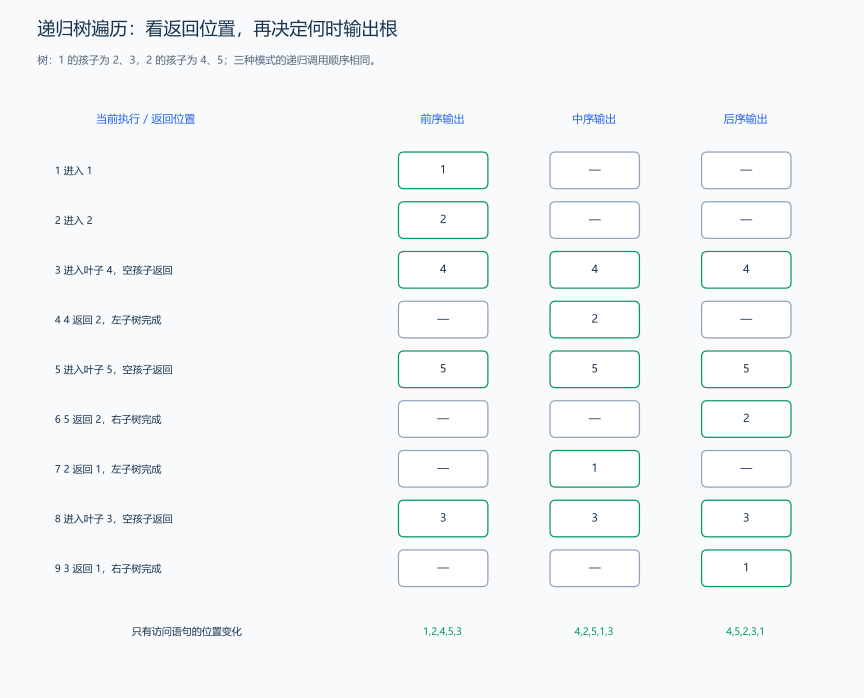
用根 1、孩子 2 和 3、节点 2 的孩子 4 和 5 来跟踪调用。前序在刚进入 2 时输出 2；中序等左侧 4 整棵子树处理完、返回 2 后才输出 2；后序还要等右侧 5 返回后才输出 2。子调用运行时，父调用停在调用语句处，返回后接着下一句，不能把“返回父节点”理解为重新执行整个父函数。三种输出依次为 1 2 4 5 3、4 2 5 1 3、4 5 2 3 1。
// 空指针立即返回。
void BinaryTree::preOrder(TreeNode *node) {
// 递归终止条件：如果当前节点为空，则直接返回
if (node == nullptr)
return;
// 访问当前节点：打印节点值
cout << node->val << " ";
// 递归遍历左子树
preOrder(node->left);
// 递归遍历右子树
preOrder(node->right);
}2.2.5 中序：左、根、右
先完整处理左子树，返回后输出根，最后处理右子树。二叉搜索树把较小值放在左侧、较大值放在右侧，所以它的中序遍历恰好从小到大输出；普通二叉树的中序则按结构给出左、根、右的访问次序。
// 先完整处理左子树，返回后输出根，最后处理右子树。
void BinaryTree::inOrder(TreeNode *node) {
// 递归终止条件：如果当前节点为空，则直接返回
if (node == nullptr)
return;
// 递归遍历左子树
inOrder(node->left);
// 访问当前节点：打印节点值
cout << node->val << " ";
// 递归遍历右子树
inOrder(node->right);
}2.2.6 后序：左、右、根
孩子处理完才访问根。删除整棵树也沿这个顺序：先通过父节点的 left、right 找到并释放两棵子树，最后释放父节点。这样读取孩子指针时，父节点仍然存在。
// 孩子处理完才访问根。
void BinaryTree::postOrder(TreeNode *node) {
// 递归终止条件：如果当前节点为空，则直接返回
if (node == nullptr)
return;
// 递归遍历左子树
postOrder(node->left);
// 递归遍历右子树
postOrder(node->right);
// 访问当前节点：打印节点值
cout << node->val << " ";
}2.2.7 用最后一个节点替换目标并删除叶子
层序扫描同时找到目标、最后访问的节点及其父节点。最后一个节点若有孩子，就不可能最后出队，因此一定是叶子；把它的值复制到目标后，解除父节点的对应孩子指针并删除叶子。空树、单节点和目标不存在分别处理，最后把返回的根指针赋给 tree.root，树便指向删除后的根。
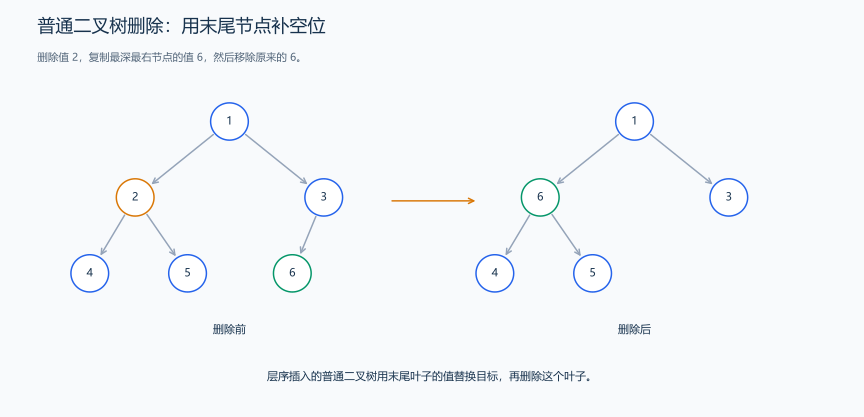
层序扫描同时找到目标、最后访问的节点及其父节点。
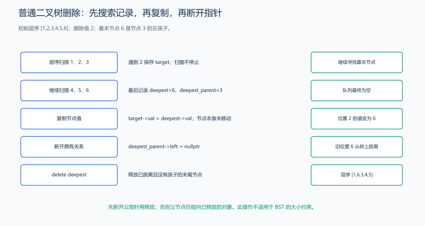
层序值为 [1,2,3,4,5,6]、删除值 2 时，扫描 2 只记下目标，不能立刻释放；扫描到最后的 6，才知道替换值及其父节点 3。把 6 复制到目标节点，再将原节点 6 的父指针 3->left 置空，最后释放该叶子。结果层序为 [1,6,3,4,5]；只复制值而不解除指针，会留下指向已释放内存的连接。
// 层序扫描同时找到目标、最后访问的节点及其父节点。
TreeNode *BinaryTree::deleteNode(TreeNode *root, int key) {
if (root == nullptr)
return nullptr;
if (!root->left && !root->right) {
if (root->val == key) {
delete root;
return nullptr;
}
return root;
}
// 用于查找目标节点和最后节点
TreeNode *target = nullptr; // 要删除的节点（只删值）
TreeNode *last = nullptr; // 最深最右节点
TreeNode *parent = nullptr; // 最深最右节点的父节点
queue<TreeNode *> q;
q.push(root);
while (!q.empty()) {
TreeNode *node = q.front();
q.pop();
// 记录最后一个节点
last = node;
// 找到目标节点
if (node->val == key) {
target = node;
}
// 入队孩子，并记录父节点
if (node->left) {
parent = node;
q.push(node->left);
}
if (node->right) {
parent = node;
q.push(node->right);
}
}
// 若未找到目标节点，直接返回
if (target == nullptr) {
return root;
}
// 将最深节点值放到目标位置
target->val = last->val;
// 删除最深节点
if (parent->right == last) {
delete parent->right;
parent->right = nullptr;
} else if (parent->left == last) {
delete parent->left;
parent->left = nullptr;
}
return root;
}2.2.8 组合调用与输出
先读入节点值，调用四种遍历，再读入要删除的值并写回返回的根。下面的输出对应后面的样例；重复输入值会被 insert 拒绝。
// 将类定义和上面各成员实现放在 main 之前。
int main() {
BinaryTree tree;
int n;
cin >> n;
while (n--) {
int x;
cin >> x;
tree.insert(x);
}
cout << "层序遍历：";
tree.levelOrder();
cout << "前序遍历：";
tree.preOrder(tree.root);
cout << endl;
cout << "中序遍历：";
tree.inOrder(tree.root);
cout << endl;
cout << "后序遍历：";
tree.postOrder(tree.root);
cout << endl;
int value;
cin >> value;
tree.root = tree.deleteNode(tree.root, value);
cout << "删除节点后，层序遍历：";
tree.levelOrder();
}输入：
5
1 2 3 4 5
2输出：
层序遍历：1 2 3 4 5
前序遍历：1 2 4 5 3
中序遍历：4 2 5 1 3
后序遍历：4 5 2 3 1
删除节点后，层序遍历：1 5 3 4层序插入构建的是如下二叉树
因此
层序遍历为：1 2 3 4 5
前序遍历为：1 2 4 5 3
中序遍历为：4 2 5 1 3
后序遍历为：4 5 2 3 1
删除后二叉树：